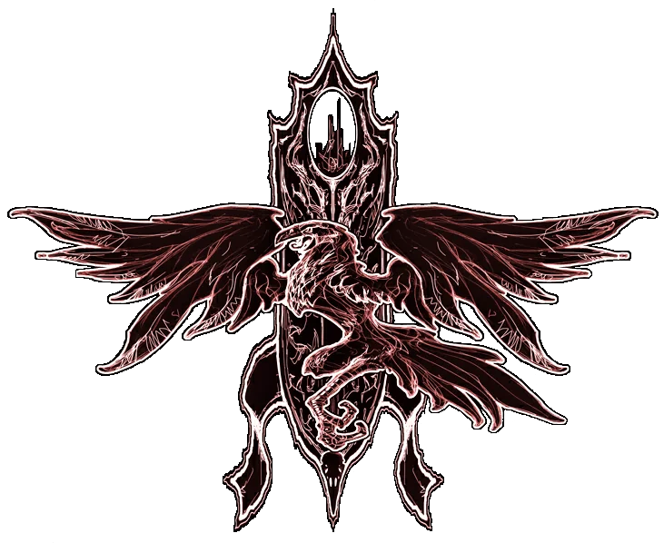

Mijn vrienden, weet dat ik het ben die je naar dit land, mijn thuis, heb gebracht en weet dat alleen ik je ervan kan bevrijden. Ik verzoek je te komen dineren in mijn kasteel, zodat we elkaar in een beschaafde omgeving kunnen ontmoeten.
Je doorgang hierheen zal veilig zijn. Ik wacht op je komst.

Uw gastheer
Graaf Strahd von Zarovich
Graaf Strahd von Zarovich